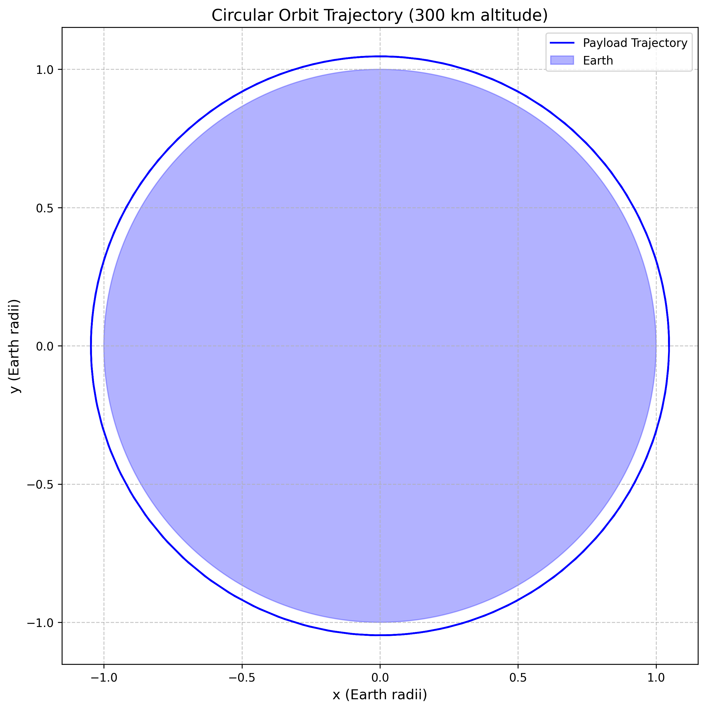
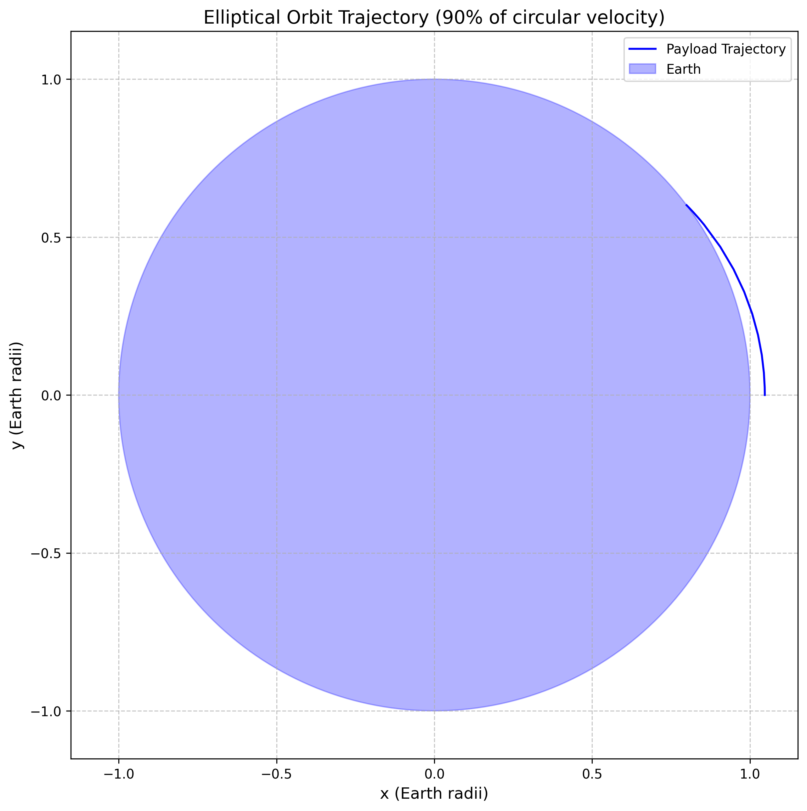
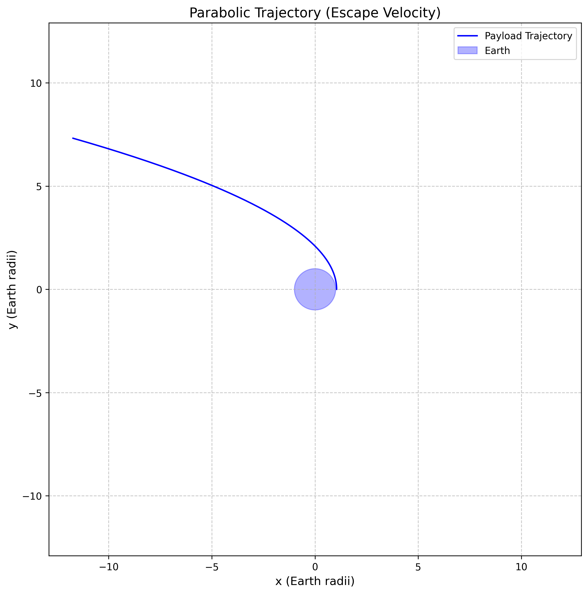
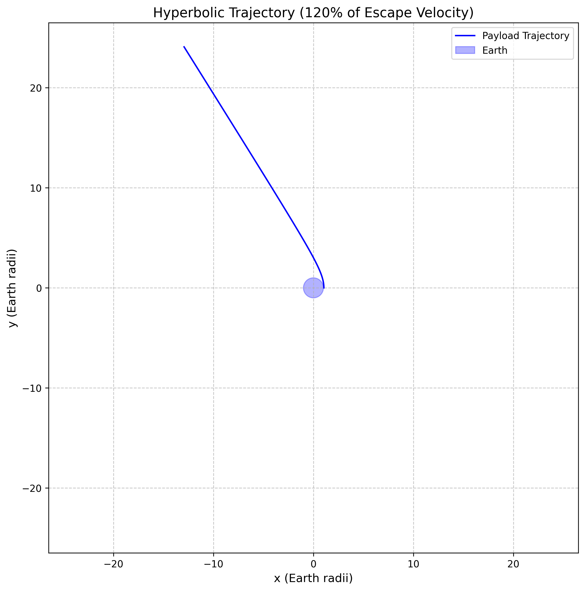
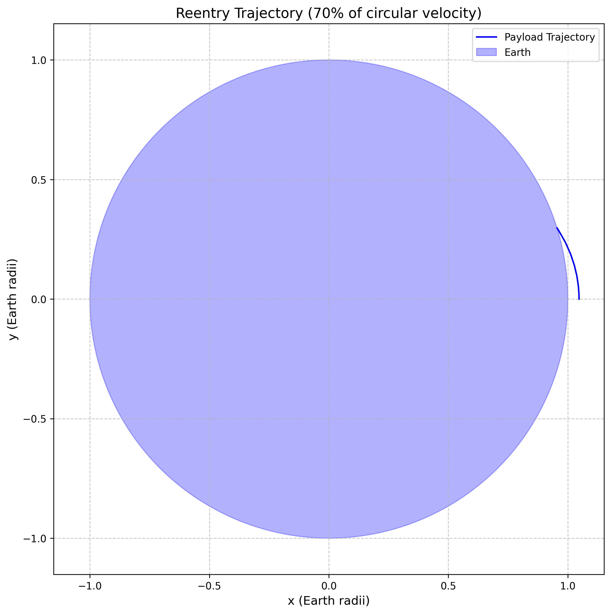
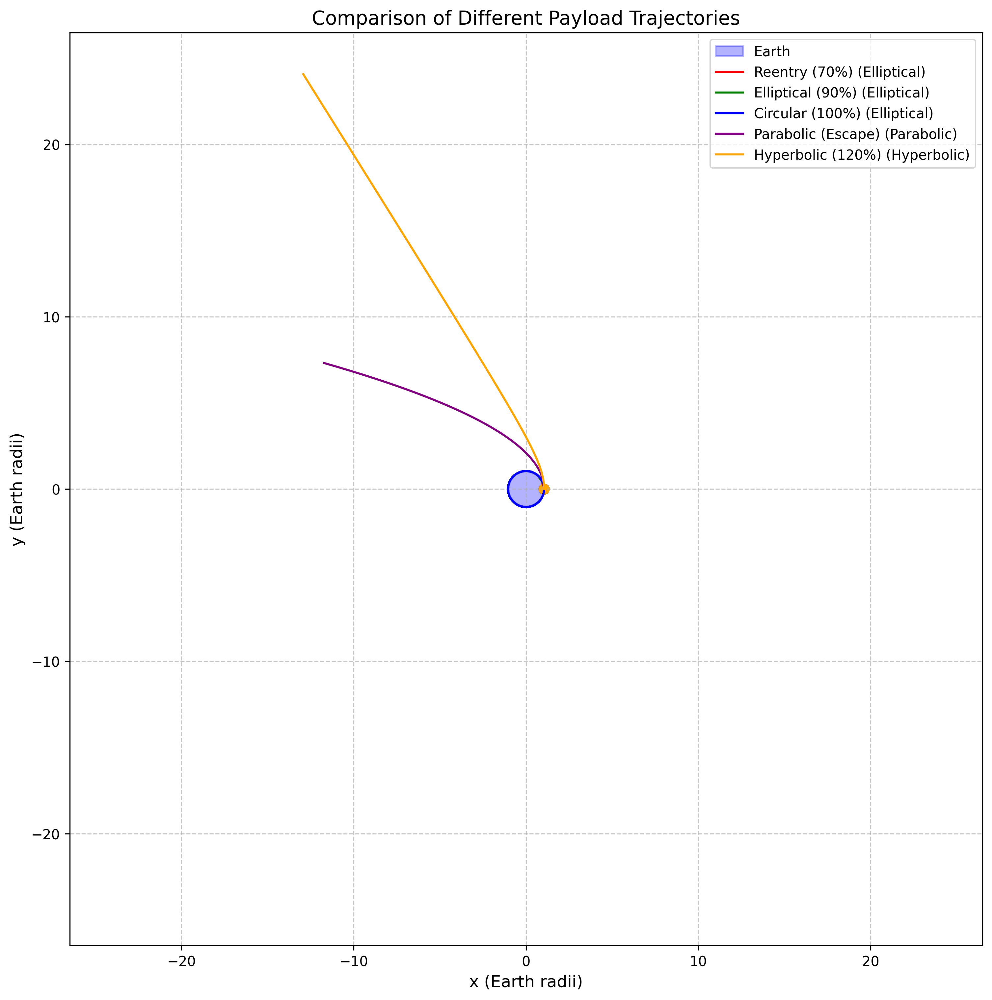
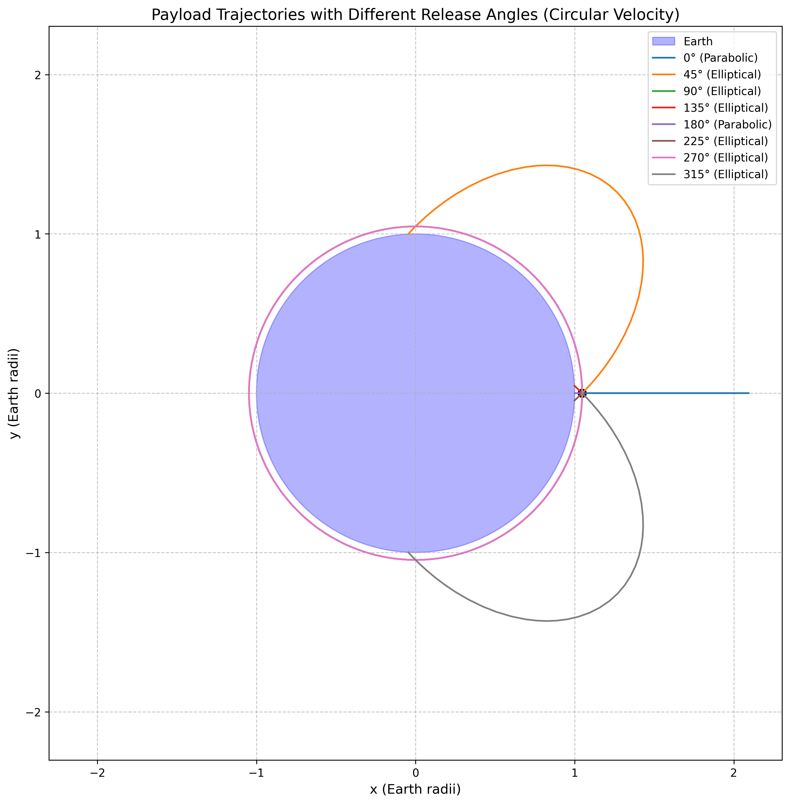
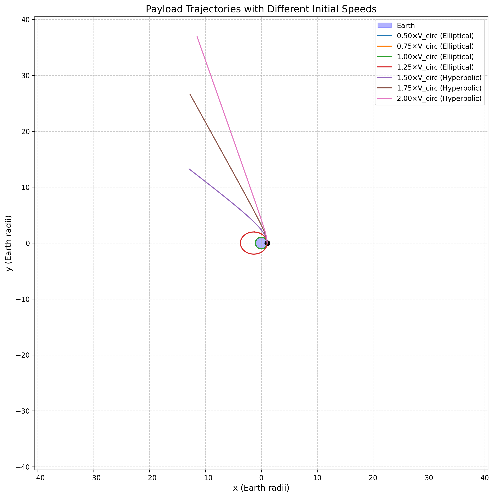

Trajectories of a Freely Released Payload Near Earth
Theoretical Foundation
Newton's Law of Universal Gravitation
The foundation of orbital mechanics lies in Newton's Law of Universal Gravitation, which states that every particle attracts every other particle with a force directly proportional to the product of their masses and inversely proportional to the square of the distance between them:
Where:
- \(F\) is the gravitational force between the two objects
- \(G\) is the gravitational constant (\(6.67430 \times 10^{-11} \, \text{m}^3 \, \text{kg}^{-1} \, \text{s}^{-2}\))
- \(m_1\) and \(m_2\) are the masses of the two objects
- \(r\) is the distance between the centers of the two objects
Equations of Motion
For a payload of mass \(m\) in Earth's gravitational field, the equation of motion is:
Where:
- \(\vec{a}\) is the acceleration vector
- \(G\) is the gravitational constant
- \(M_E\) is the mass of Earth
- \(\vec{r}\) is the position vector from Earth's center to the payload
- \(r\) is the magnitude of \(\vec{r}\)
In Cartesian coordinates, this becomes:
Where \(r = \sqrt{x^2 + y^2}\).
Orbital Energy and Conic Sections
The specific orbital energy (energy per unit mass) of a payload is conserved in a gravitational field and is given by:
This energy determines the type of orbit:
- \(\varepsilon < 0\): Elliptical orbit (closed)
- \(\varepsilon = 0\): Parabolic trajectory (escape with zero excess velocity)
- \(\varepsilon > 0\): Hyperbolic trajectory (escape with excess velocity)
The eccentricity \(e\) of the orbit is related to the specific energy and angular momentum \(h\) by:
Where the angular momentum per unit mass is \(h = |\vec{r} \times \vec{v}|\).
Types of Trajectories
A circular orbit occurs when the payload has exactly the right velocity to maintain a constant distance from Earth. The required velocity at a distance \(r\) is:
For a circular orbit, the eccentricity \(e = 0\) and the specific energy \(\varepsilon = -\frac{GM_E}{2r}\).

Figure 1: Circular orbit of a payload around Earth with constant radius. The payload maintains a fixed distance from Earth at all times.
An elliptical orbit occurs when the payload has less than escape velocity but more than the minimum velocity needed to prevent collision with Earth. The eccentricity is between 0 and 1 (\(0 < e < 1\)).
The semi-major axis \(a\) of the ellipse is related to the specific energy by:
The periapsis (closest approach) and apoapsis (farthest approach) distances are:

Figure 2: Elliptical orbit showing varying distance from Earth with periapsis and apoapsis points. The orbit follows Kepler's laws with Earth at one focus of the ellipse.
A parabolic trajectory occurs when the payload has exactly escape velocity. The eccentricity \(e = 1\) and the specific energy \(\varepsilon = 0\).
The escape velocity at a distance \(r\) from Earth's center is:
This represents 141% of circular velocity at the same radius.
For a parabolic trajectory, the semi-major axis \(a\) is infinite, and the periapsis distance is:
where \(h\) is the specific angular momentum.

Figure 3: Parabolic trajectory showing a payload escaping Earth's gravity with zero excess velocity. This represents the boundary between bound and unbound orbits.
A hyperbolic trajectory occurs when the payload has greater than escape velocity. The eccentricity \(e > 1\) and the specific energy \(\varepsilon > 0\).
This typically occurs when the initial velocity is about 120% of escape velocity or approximately 170% of circular velocity at the same radius.
The semi-major axis \(a\) is negative for hyperbolic orbits, and the periapsis distance is:
The asymptotic velocity (velocity at infinite distance) is related to the specific energy by:

Figure 4: Hyperbolic trajectory showing a payload escaping Earth's gravity with excess velocity. The trajectory approaches an asymptotic direction as the payload moves away from Earth.
A reentry trajectory occurs when the payload has insufficient velocity to maintain orbit and intersects with Earth's surface. This is typically an elliptical orbit with a periapsis (closest approach) below Earth's surface.

Figure 5: Reentry trajectory showing a payload returning to Earth's surface. The trajectory intersects with Earth's atmosphere, leading to aerodynamic braking and eventual landing.
Trajectory Analysis
The following figure compares different types of trajectories for a payload released at the same position (300 km above Earth's surface) but with different initial velocities:
- Reentry trajectory (70% of circular velocity)
- Elliptical orbit (90% of circular velocity)
- Circular orbit (100% of circular velocity)
- Parabolic trajectory (100% of escape velocity or 141% of circular velocity)
- Hyperbolic trajectory (120% of escape velocity or about 170% of circular velocity)

Figure 6: Comparison of different trajectory types based on initial velocity. The figure demonstrates how the initial speed determines whether the payload will remain in orbit, escape Earth's gravity, or return to the surface.
The direction in which a payload is released significantly affects its trajectory. The following figure shows trajectories for a payload released with circular velocity in different directions:
When released tangentially to Earth's surface (90° or 270°), the payload achieves a circular orbit. When released at other angles, the trajectory becomes elliptical, with the Earth's center at one focus of the ellipse. This is a direct consequence of the conservation of angular momentum and energy.

Figure 7: Effect of release direction on orbital trajectory. The figure illustrates how the angle of release determines the shape and orientation of the resulting orbit while maintaining the same energy.
The initial speed of the payload is a critical factor in determining its trajectory. The following figure shows trajectories for a payload released with different speeds in the same direction:
As the speed increases:
- Below circular velocity: Elliptical orbit with increasing apoapsis (farthest point)
- At circular velocity: Circular orbit
- Between circular and escape velocity: Elliptical orbit with increasing eccentricity
- At escape velocity: Parabolic trajectory
- Above escape velocity: Hyperbolic trajectory with increasing eccentricity

Figure 8: Effect of initial speed on orbital trajectory. The figure shows how increasing the initial velocity transforms the orbit from elliptical to circular, then to increasingly eccentric ellipses, and finally to parabolic and hyperbolic trajectories.
Computational Model and Visualization
The computational model simulates the trajectories of payloads released near Earth under the influence of gravity. It calculates orbital parameters such as eccentricity, specific energy, and angular momentum, and visualizes different types of trajectories through static plots and animations. The model demonstrates how initial conditions determine whether a payload will enter orbit, escape Earth's gravitational field, or reenter the atmosphere.
Applications in Space Missions
Orbital Insertion
Orbital insertion involves placing a spacecraft into a stable orbit around Earth or another celestial body. This requires accelerating the spacecraft to the appropriate velocity for the desired orbit. For a circular Low Earth Orbit (LEO) at an altitude of 300 km, the required velocity is approximately 7.73 km/s.
The process typically involves:
- Launch from Earth's surface
- Ascent through the atmosphere
- Coast to the desired altitude
- Burn engines to achieve orbital velocity
Reentry
Reentry involves returning a spacecraft or payload to Earth's surface. This requires reducing the spacecraft's velocity below orbital velocity, allowing it to follow a trajectory that intersects with Earth's atmosphere.
The process typically involves:
- Deorbit burn to reduce velocity
- Atmospheric entry
- Aerodynamic braking
- Terminal descent and landing
The reentry trajectory must be carefully controlled to ensure that the spacecraft experiences acceptable levels of deceleration and heating during atmospheric entry.
Escape Trajectories
Escape trajectories are used for missions to other planets or beyond the Solar System. This requires accelerating the spacecraft to at least escape velocity.
For interplanetary missions, the spacecraft typically follows:
- Escape trajectory from Earth
- Heliocentric transfer orbit to the target planet
- Capture into orbit around the target planet (requiring a deceleration burn)
For missions beyond the Solar System, the spacecraft must achieve the third cosmic velocity, which is the velocity needed to escape the Sun's gravitational field from Earth's orbit:
where \(r_{Earth}\) is Earth's distance from the Sun and \(v_{Earth}\) is Earth's orbital velocity around the Sun.
Numerical Simulation
The trajectories shown in this document were generated using numerical integration of the equations of motion. The simulation uses the following approach:
- Define the initial conditions (position and velocity)
- Set up the differential equations based on Newton's Law of Gravitation
- Use a numerical integrator (Runge-Kutta method) to solve the equations
- Analyze the resulting trajectory
The simulation accounts for Earth's gravitational field but neglects other factors such as:
- Atmospheric drag
- Non-spherical shape of Earth (J2 perturbation)
- Gravitational influence of the Moon and Sun
- Solar radiation pressure
For more accurate simulations of real space missions, these additional factors would need to be considered.
Conclusion
The trajectory of a payload released near Earth depends primarily on its initial position, velocity, and direction. By understanding the principles of orbital mechanics and using numerical simulations, we can predict and analyze these trajectories for various space mission scenarios.
Key insights include:
- The initial velocity determines whether the trajectory will be elliptical, parabolic, or hyperbolic
- The release direction affects the orientation and shape of the orbit
- The specific energy and angular momentum are conserved quantities that determine the orbital parameters
- The relationship between circular velocity and escape velocity is constant: \(v_{esc} = \sqrt{2} \cdot v_{circ}\)
- For interplanetary missions, the third cosmic velocity (escape velocity from the Solar System) is an important threshold
This problem demonstrates several fundamental principles of physics:
- Conservation of Energy: The total energy (kinetic + potential) of the payload remains constant in the absence of non-gravitational forces
- Conservation of Angular Momentum: The angular momentum of the payload is conserved, which explains why orbits are planar
- Newton's Laws of Motion: The payload's acceleration is determined by the gravitational force according to Newton's Second Law
- Kepler's Laws: The resulting orbits follow Kepler's Laws, with the payload sweeping out equal areas in equal times
Understanding these principles is essential for space mission planning, satellite deployment, and planetary exploration. The computational model developed in this problem provides a foundation for more complex simulations that could include additional perturbations such as atmospheric drag, non-spherical gravity fields (J2 effect), and third-body gravitational influences.